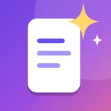

لومن کیپ
Lumen Keep
یادداشتهایی که برایت به خاطر میسپارند
لومن کیپ یک اپ یادداشت اندروید است. بدون حساب و بدون اینترنت کار میکند. ویرایشگر Markdown، پوشه، برچسب و ویجت دارد. دستیار هوش مصنوعی آن همهٔ یادداشتهایت را میخواند و به سؤالهایت جواب میدهد.
اگر بخواهی، یادداشتها با گوگل درایو خودت همگام میشوند. اپ فقط به یک پوشهٔ پنهان مخصوص خودش در درایو تو دسترسی دارد و بقیهٔ درایوت را نمیبیند.
Notes that remember for you
Lumen Keep is an offline-first Android notes app with a live Markdown editor, folders, tags, a home-screen widget and an AI assistant that answers questions across all your notes.
Optional sync uses your own Google Drive. The app can only access its own hidden app folder and cannot see the rest of your Drive.
سازنده / Developer: Sajjad Majdi · sajjad.313majdi@gmail.com